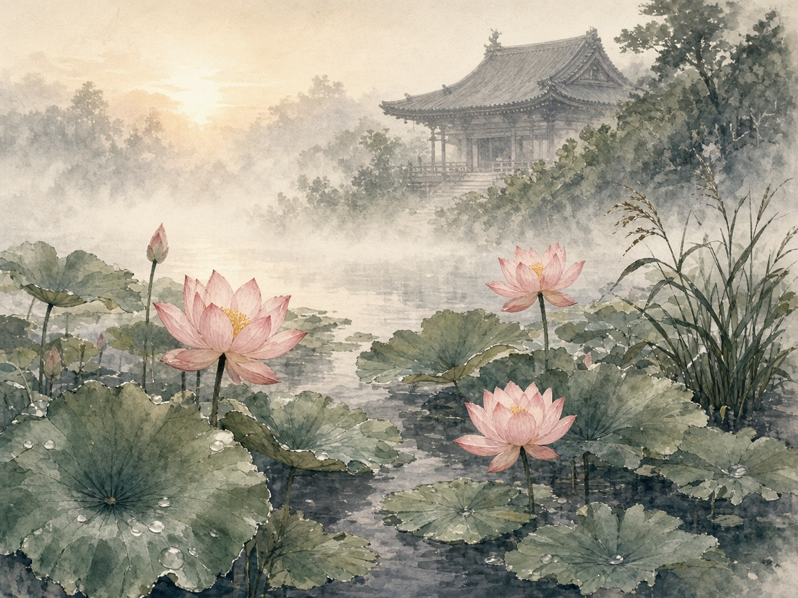

第13回如蓮華在水（にょれんげざいすい）― 泥に染まらぬ蓮の花
配信日
🔊 読み上げで聴く
出典『妙法蓮華経』従地涌出品第十五（地涌の菩薩を讃える偈）

今日は、法華経の従地涌出品（じゅうじゆじゅつほん）第十五から、蓮の花のたとえをご紹介します。この品では、お釈迦さまの呼びかけに応えて、大地の下から数えきれないほどの菩薩がたが涌き出てきます。末法の世に法華経を弘めると誓う「地涌（じゆ）の菩薩」です。その姿を、お経はこう讃えています。
「善く菩薩の道を学して、世間の法に染まざること、蓮華の水に在るが如し。地より而も涌出す」 出典 『妙法蓮華経』従地涌出品第十五（善学菩薩道 不染世間法 如蓮華在水 従地而涌出）
蓮は、濁った泥の池に根を張りながら、その泥に染まることなく清らかな花を咲かせます。泥から離れて咲くのではなく、泥があるからこそ養分を得て咲くのです。私たちの毎日も、忙しさや人づきあいのわずらわしさ、思いどおりにならないことの中にあります。そこから逃げ出さなくても、心まで濁りに染めずに過ごすことはできる、と蓮は教えてくれます。お経の題名「妙法蓮華経」にも蓮の花が入っていますね。お題目を唱えるたびに、泥の中に咲く蓮の花を、自分の胸にひとつ咲かせるつもりでお唱えしたいものです。